12.1. itom#
This chapter shows how itom is based on Python as the scripting language and provides additional features in the context of measurement hardware control, measurement automation and user interface. Click on any image to see the full script documentation.
12.1.1. Basics#

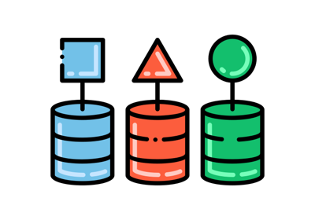
DataObject

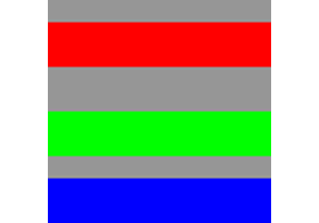
Load and save dataObject

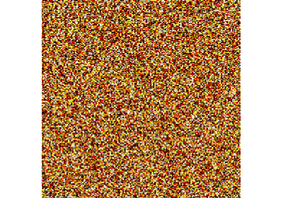
Convert falseColor
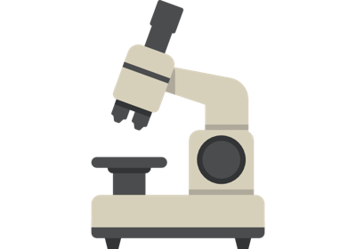
Measurement
Timer
12.1.2. Data processing#
Cross correlation of images
Fit data

12.1.3. Matplotlib embedded#


12.1.4. itom apps#

12.1.5. Plots#
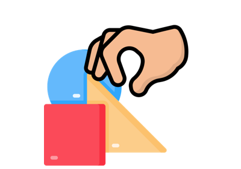
Interactive shape picker

Auto-update plot

Datetime


Shape transformation


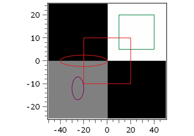
Colored shapes
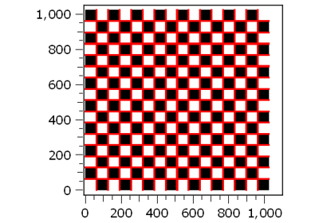
Draw markers
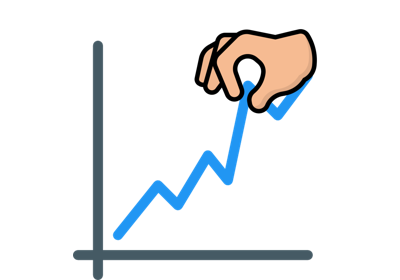
Draw pickers 1D plot
Figure positioning


Plot 2.5D/ 3D

12.1.6. Plugins#

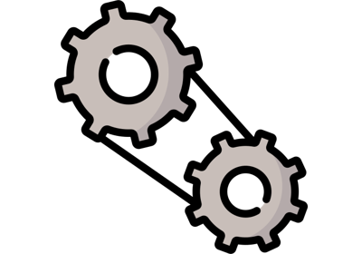
DummyMotor
OpenCV filter
Face Detection
12.1.7. PointCloud#


12.1.8. User interface#


Algorithm cancel and progress widget
Algorithm cancel and progress widget
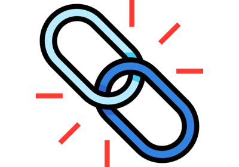
Auto connect signals
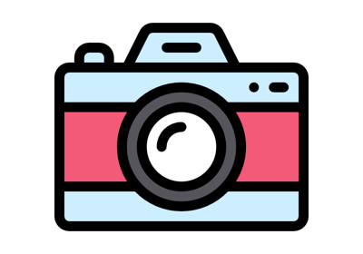
Camera widget


GUI icons as images
Interrupt
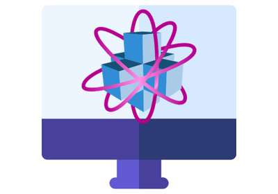
ItomUI class


12.1.9. Customize itom GUI#

12.1.10. User interface dynamic layouts#


Horizontal Box Layout

Multiple plots in horizontal layout
Multiple plots in horizontal layout